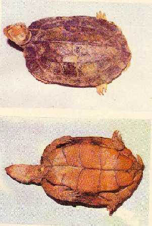

|
Digitized
Inventory of Animal Resources: Reptilia |
Heosemys silvatica
Taxonomic
Details
----- Scientific Name
----- Classification
----- Synonyms
----- Common Names
Other
Biological Details
----- Habit and
Habitat
----- Distribution
---------- Extent of
Occurrence
---------- Area of
occurrence
---------- Altitude
---------- Population
-----
Conservation Status
-----
Diagnostic
Features
-----
Breeding system
Miscellaneous
Information
Literature
Genus ; Heosemys Stejneger 1902
Heosemys silvatica ( Henderson 1912 )
Family :
Classification:
Synonyms:
Common Names: Nil
Other Biological Details Threat
Reported to be killed and used by tribal for cure and preventives measures for bleeding piles. Habitat is threatened by the loss of rain forests.
HABIT & HABITAT: Lives in dense upland rain forests up to 500 m altitude. Lives in small burrows on the muddy rocky hill slopes covered with sense forest litter. The brownish colouration of the turtle is most suitable and renders its ability to camouflage in the brownish dry leaves. Herbivorous.
Endemic to Western Ghats, Kerala part, India
Extent of Occurrence
Area of occurrence: Calicut, Mallapuram, Pattamthitta, Periyar WLS,
Altitude:
Lives
in dense upland rain forests up to 500 m altitude.
Population:
Conservation status: Threatened by the loss of rain forest habitat
Size :
Very small, secretive, freshwater and terrestrial turtle, not reaching
more than 12 cm in length.
Body :
Head is comparatively large, snout tube like, truncated anteriorly and is
as long as the orbit, upper jaw hooked. Skin
of the posterior portion of the head is having moderately large shields.
Limbs :
Fore limbs are with enlarged, squarish, pointed horny scales, mainly on
the front. Hind limbs are club
shaped, anterior margin and the region of the heels are having enlarged horny
scales. Fingers are webbed at the
base.
Tail :
Very short
Carapace :
Much depressed and is provided with strong vertebral keel. Two feebly developed keels are present on both lateral
aspects of the carapace. Posterior
margin of the shell is slightly reverted.
Plastron as large as the shell opening.
Colouration : Carapace dark brown or bronzy, Plastron is yellow with two distinct deep yellow spots on the bridge. Upper portion of the forehead and jaws are bright yellow, hinder part of the head and neck are brown, limbs and tail are black and top of the snout is provided with a red spot.
Breeding system:
.Nesting : Nothing is known about its breeding habits.
Miscellaneous Information Threat
Reported to be killed and used by tribal for cure and preventives measures for bleeding piles. Habitat is threatened by the loss of rain forests.
